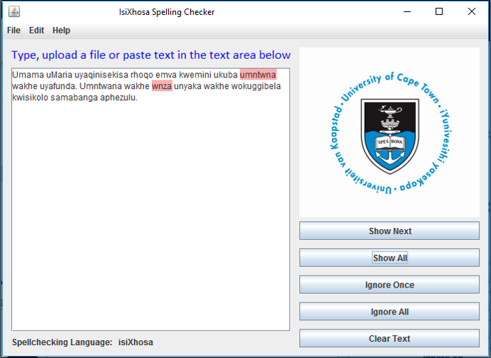

The approach that has been used in the spellchecking field is the statistical based approach.
The rules of the system were
|  | The error detector was implemented as a finite state transducer network, where we used the SFST-PL (a programming language for the tool SFST) which supports many different formats of regular expressions such as the ones used in grep, sed or Perl. Based on the morphology books that we were reading, we have developed rules for nouns, verbs, adjectives, pronouns and possessives. We have then used Java Swing for implementing the interface shown on the left. The interface was built for testing the rules and there we no user evaluations conducted for this interface. In testing the system we used a corpus received from the African Language section at the University of Cape Town which had 21852 words together with a textfile extracted from the RMA website which had 20826 nouns. We first tested each transducer for Part-Of-Speech (POS) tagging and then combined the system as a complete system. In terms of POS tagging the accuracy for the noun rules was 88.26%, 94.58% for the verb rules, 97.91% for adjective rules, 98.12% for the pronoun rules and 100% for the possessive rules. The overall spellchecking accuracy of the system was 80.08%. |
Rule-Based Literature Review
|
Rule-Based Project Report
|
Rule-Based Project Code |
The rules of the system were